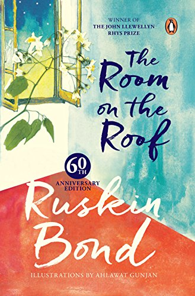

My hobbies include:
 1. Listening to Music
1. Listening to Music
Music is one of my favourite hobbies. Music has really put into word so many of my feelings. Whenever I'm happy, sad, worried, anything, music literally helps me to overcome every emotion. Music really makes me feel like life is just so beautiful. There are so many different songs, genres, artists, etc but music trancends all boundaries. Music always lifts my mood up. They are various artists and genres I listen to but some are my favourite like BTS(Kpop BoyBand), SOMI(Kpop Soloist), IU(Kpop Soloist), TXT(Kpop BoyBand) etc. I really used to hate rap songs but AgustD's First Love made me love rap because I was surprised of how meaningful the lyrics of a rap song can be. And I really loved J Hope's Outro:Ego because of how upbeat it is even though it is a rap song. Dynamite litrally made me love BTS. And it always amazes me about how big of an impact music can have on a person.


 2. Reading
2. Reading
Reading books is something that I've been doing since I was 5. I really like reading books because books are just, beautiful... Sometimes, it just stuns me about how good a writer can be about his/her expressions of describing the story to someone who is knowing about it for the first time. I could really say that most of the English I learnt, was from reading books. There is only one genre that I despise the most and it is horror. It scares me but at the same time amazes me. How can someone scare a person to a point that they dont even want to read any further, just by words? My favourite genre is fantasy [trust me, Harry Potter is not my favourite ;)] Fantasy books are really good, since they are fictional and it purely depends on how we imagine the things to be. I most like the books that are set in other eras or places, since it is something that I would really enjoy. My favourite type of books would be mythology, mainly greek and egyptian and that brings me to my next hobby.



 3. Mythology
I love anything, and everything related to mythology. As I said earlier, my favourite mythologies are greek and egyptian. I am very curious about things and these kinds of anient things fascinate me[P.S, If you want to suggest me any ancient things or books I can try, do tell me in the form on my home page. I would really appreciate that :)] I'm an ancient geek, and I really, really love mythologies. That is why one of the books I want to try is the Percy Jackson series [Yes, its based on greek mythology ^_^] I reserch A LOT on ancient stuff and mythologies and sometimes just go a little too deep. I keep on clicking links and links, until someone actually brings me back to the real world. I'm that absorbed.
3. Mythology
I love anything, and everything related to mythology. As I said earlier, my favourite mythologies are greek and egyptian. I am very curious about things and these kinds of anient things fascinate me[P.S, If you want to suggest me any ancient things or books I can try, do tell me in the form on my home page. I would really appreciate that :)] I'm an ancient geek, and I really, really love mythologies. That is why one of the books I want to try is the Percy Jackson series [Yes, its based on greek mythology ^_^] I reserch A LOT on ancient stuff and mythologies and sometimes just go a little too deep. I keep on clicking links and links, until someone actually brings me back to the real world. I'm that absorbed.


 4. Badminton
Badminton is my favourite sport since Its the only sport that I'm actually good at. Though I don't have so much time to play now, badminton is still something I really enjoy. I can give the credit of my extra inches in height to badminton only...It's like the one place where I dont have to worry about how I am doing it and it just makes me feel free...Win or lose, in badminton, I dont care about that.
4. Badminton
Badminton is my favourite sport since Its the only sport that I'm actually good at. Though I don't have so much time to play now, badminton is still something I really enjoy. I can give the credit of my extra inches in height to badminton only...It's like the one place where I dont have to worry about how I am doing it and it just makes me feel free...Win or lose, in badminton, I dont care about that.


 Home page
Home page